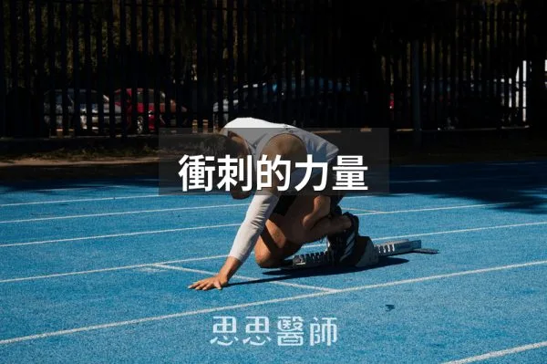
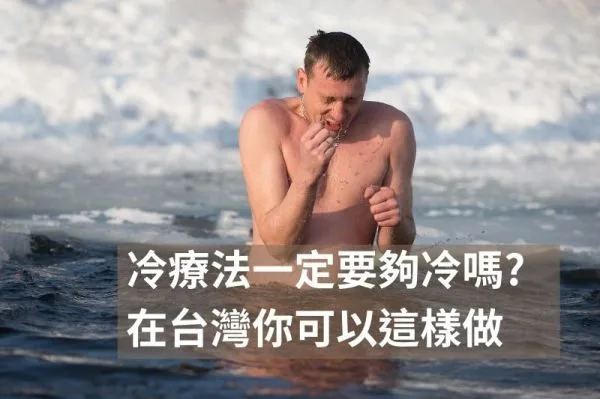
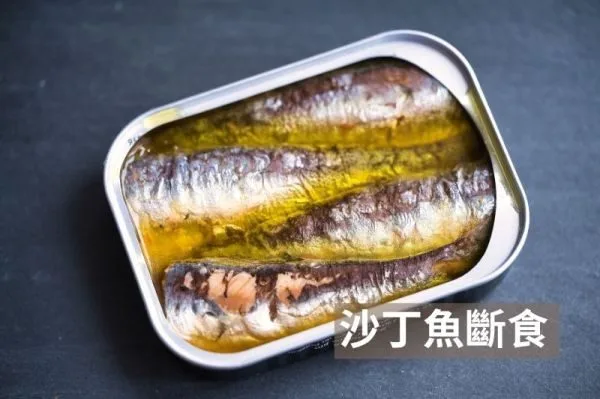
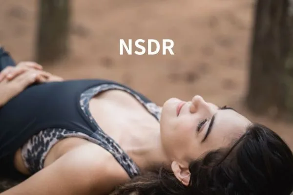
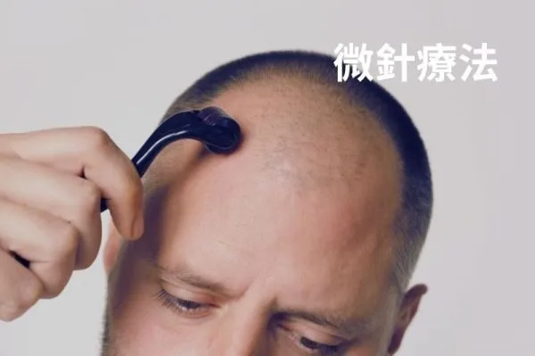
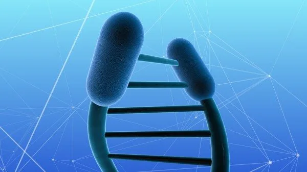
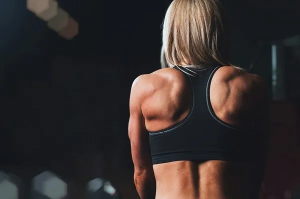

保養腸胃道的小訣竅
2026-10-07
保養腸胃道應在清晨補充電解質、用蒸煮代替炒炸、進食時專注進食、每日至少12小時不進食、練習腹式呼吸並避免非必要服用抗生素。

76 篇文章
保養腸胃道應在清晨補充電解質、用蒸煮代替炒炸、進食時專注進食、每日至少12小時不進食、練習腹式呼吸並避免非必要服用抗生素。

衝刺訓練能招募快縮肌纖維、刺激生長激素分泌，應進行二十至三十秒高強度衝刺，間隔休息六十至九十秒。

吃生酮飲食不等於身體真的在生酮，關鍵在胰島素能否降下來，胰島素阻抗者即使飲食標準，酮體生成與利用也可能打折。

GHK-Cu 是隨年齡下降的銅螯合物，能改變 31% 的基因表現、促進組織修復並具抗發炎作用，但目前注射劑無合法管道。

PhenoAge 用九項常規血液檢查推算生物年齡，比表觀遺傳時鐘便宜得多，能預測死亡率且能透過飲食干預改善。

不同波長的光透過觸動生色團激活特定的細胞信號，藍光殺菌但影響褪黑激素、紅光與近紅外線能提升粒線體能量生成。

氫氣選擇性清除最毒的羥自由基而不傷害有生理功能的活性氧，能啟動細胞抗氧化系統並保護粒線體，特別在脂肪肝治療上有臨床證據。

澱粉冷藏後能形成抗性澱粉的效果取決於直鏈澱粉比例，長粒米和義大利麵冷藏有效，糯米和地瓜效果有限。

過量抗氧化物補充反而增加死亡風險，適度活性氧對細胞訊號傳遞、修復機制與整體免疫功能具必要性。

安眠藥可在高壓期短期使用且建議兩週內；傳統藥物會壓縮深眠，ramelteon 與 lemborexant 對睡眠結構較友善，也可用 CBT-I。

降膽固醇藥吃了 LDL 仍不夠低時，可與醫師討論加 Ezetimibe，並搭配植物固醇、小檗鹼與可溶性纖維，已服他汀者應避開紅麴保健品。

1965年蘇格蘭的 Angus Barbieri 在醫療監督下斷食382天，體重從207公斤降到82公斤，但作者強調案例極端，不建議任何人仿效。

極低碳水化合物攝取可能升高皮質醇，全食物碳水透過色胺酸途徑提升血清素，有助降低壓力荷爾蒙反應。

研究指出人一天能維持高品質專注的時間約四小時，短暫休息無法完全恢復，把腦力工作放在早上並顧好睡眠更重要。

作者自己做五天鯖魚斷食，氣酮升到 23.0 ppm、空腹血糖由 107 降到 85 mg/dL，並討論其限制，屬個人經驗分享。

秋刀魚Omega-3含量最高達3.77克/100克，帶骨罐頭沙丁魚鈣質382毫克/100克最豐富，鯖魚最常見，選擇取決於補充優先順序。

研究顯示先吃蔬菜和蛋白質、最後才吃碳水，能讓餐後血糖高峰降低，文中提到糖尿病前期族群的血糖曲線下面積降低了 38.8%。

一項隨機對照交叉試驗發現，餐後僅 1 分鐘舒適步調上下樓梯就能降低血糖與胰島素，3 分鐘更能改善胰島素敏感度，受試者主要是健康年輕人。

一項 2025 年研究顯示，糖尿病前期患者在坐姿下規律做比目魚肌踮腳，血糖上升幅度平均降低約 32%，但樣本僅 10 人、仍屬初步結果。

飯後運動15分鐘比每天晨間空腹快走45分鐘更能有效控制血糖，能減少餐後血糖約40至50 mg/dL，HbA1c下降幅度優0.7%。

比較省略早餐與省略晚餐的限時進食，作者整理證據認為早進食在血糖、脂肪代謝與食慾調控上較佔優勢，但晚進食因社交因素更常被實行。

冷暴露不必極冷，10°C 到 15°C 的水溫就有效；台灣夏天可用冰塊泡澡或冷熱交替淋浴，並依水溫調整時間，心血管疾病者需先諮詢醫師。

外源酮是直接補充的酮體，不必低醣也能讓血中酮體上升，作者認為它能穩定能量、輔助斷食並調節神經訊號，是自然的代謝穩定工具。

Nick Norwitz 提出的沙丁魚斷食，用整尾沙丁魚在低熱量下補足優質營養，作者認為肌肉與能量不被犧牲，並介紹做法與台灣替代選擇。

長壽基因Sirtuin靠NAD⁺驅動，可透過間歇性斷食、運動、NMN補充及多酚食物激活，但睡眠與飲食節律才是關鍵開啟條件。

眼睛健康取決於血糖穩定、充足營養補充（Omega-3、葉黃素、蝦紅素、維他命C）與正確用眼習慣，可透過改善生活方式來保護視力。

活性碳因龐大表面積能吸附毒素，短期搭配排毒策略時有幫助，但長期使用反而造成營養失衡，需與藥物間隔至少三小時使用。

棕色脂肪燃燒能量穩定血糖，可透過冷適應、間歇性斷食、多酚食物、運動與規律睡眠來增加其活性。

補水的關鍵在電解質平衡而非單純喝量，鈉和鉀比例決定水能否進入細胞，過量飲水不補鹽反而引發低鈉血症和水中毒。

紅光和近紅外線光透過移除粒線體呼吸鏈中的一氧化氮抑制、激活細胞防禦系統，提升ATP生成和細胞韌性，對衰老和退化性疾病有保護作用。

極低脂肪高糖飲食能重新訓練胰島素敏感度和代謝靈活性，但長期低蛋白會傷肌肉和荷爾蒙，已有胰島素阻抗或脂肪肝者應避免。

低碳適應後重新進食碳水可提升代謝靈活性、改善胰島素敏感度和甲狀腺荷爾蒙，讓身體脫離節能模式，體重可能持續下降。

LMHR 是瘦、胰島素敏感者採低碳飲食後 LDL 飆高，但 HDL 高、TG 低的體質，適量回補碳水可使 LDL 下降，仍須完整檢查。

蛀牙的關鍵不是吃多少糖而是多久吃一次，每次進食後 pH 會降到 5.5 以下，牙齒需要30到60分鐘才能恢復，睡前吃東西最傷牙。

BDNF是維持大腦功能的關鍵蛋白，高強度運動、斷食和深層睡眠能顯著提升其濃度，進而改善記憶、學習與情緒調節。

草飼牛肉的 Omega 脂肪酸比例優於穀飼牛肉，能夠降低發炎反應並支持心血管與荷爾蒙健康。

碳水會不會變成脂肪不只看吃多少，也看吃的時間，中午左右胰島素敏感度最高較適合，晚上則要少量並提早吃完。

NSDR在清醒狀態下進入深度放鬆，可提升學習效率50%、降低皮質醇、增強認知功能，練習時間僅需8-10分鐘適合忙碌現代人。

透過避免藍光、鼻呼吸、維持腸道菌叢、冥想與避免咖啡因，可以有效刺激迷走神經，恢復自律神經平衡。

斷食能在短時間內大幅降低胰島素濃度，刺激自噬、改善胰島素阻抗與免疫力，但不建議頻繁進行超過72小時的長斷食。

油漱法是用椰子油等含漱的傳統做法，部分小型研究顯示可減少牙菌斑與牙齦發炎，但證據仍有限，且不能取代刷牙與牙線。

Hydroxyapatite是牙齒的主要成分，能自然重建牙釉質，其效果與氟化物相當但被視為更安全的替代選項。

微針搭配Minoxidil能顯著促進生髮，前12週可見毛髮數量增加，但需選擇適當深度並定期施作才能有效避免副作用。

冷水刺激可促進血管收縮、神經傳導物質增加與棕色脂肪啟動，每週11分鐘的冷暴露能帶來代謝提升與心理健康益處。

酮體數值高低不代表脂肪燃燒效率，脂肪適應後血酮可能降低但脂肪燃燒仍活躍，應用血糖酮體指數和身體感受評估酮症效果。

現代飲食Omega-6:Omega-3比例達15:1至40:1，理想應為3:1以下，過高與心血管疾病、肥胖、認知衰退相關，應減少植物油增加深海魚。

刮舌苔是生物駭客推崇的習慣，可減少口臭相關菌群並影響味覺，建議用專用刮舌板從舌根刮到舌尖，力道不可過大，異常舌苔仍需就醫。

斷食模仿飲食每月5天低熱量攝取可能減少生物學年齡約2.5歲，但生活習慣改善仍是長期健康的基礎。

三種主要螯合劑EDTA、DMSA和DMPS因重金屬特性不同而各有應用，必須在醫生指導下使用並監測礦物質平衡。

心律變異代表每個心跳間的細微變化，反映自律神經靈活性，較高心律變異預示身體抵抗力強，運動和放鬆能增加心律變異。

可透過光線、溫度、食物與保健品四個變因重設生理時鐘，例如早晨曬太陽至少15-30分鐘、睡前2-3小時避免強光，並持續3-4週。

尼爾·馬里諾是六十多歲的巴西健身模特，因嚴格的健身和健康習慣而保持年輕的外貌和結實健美身材。

作者主張戒糖是改善健康的第一步，指出糖與多種疾病有關、會損害粒線體並有成癮性，不吃甜食也不代表沒攝取糖，澱粉同樣會轉成糖。

亞甲藍是由德國化學家在一八七六年發現的藍色物質，從染料發展為現代醫學的重要工具，具廣泛應用。

粒腺體是細胞發電廠，運動、富營養飲食、卡路里限制和間歇性禁食都能增加粒腺體的數量和工作效率。

測量酮體有三種方式，尿酮最便宜但最不準確只在生酮初期測得，血酮最準但需扎針且費用較高，氣酮最方便但機器昂貴，每個人的酮體基準不同無需互相比較。

方形呼吸法透過吸氣四秒、屏氣四秒、吐氣四秒的循環進行，能有效緩解焦慮、穩定血壓並增強專注力。

赤腳走路能強化足部肌肉、改善跑步技術、減少運動傷害，但從穿鞋過渡至赤腳行走時需要逐漸適應足部。

鳳梨發酵飲料提帕切含有益生菌和低度酒精成分，可在室溫下發酵三至五天製成，非常適合家庭釀造。

端粒每次細胞分裂時縮短，人體細胞僅能分裂約50次，壽命上限約120至125歲，冥想、運動和補充魚油能延緩端粒損耗。

快速澱粉如白麵包20至30分鐘完全吸收導致血糖急劇上升，慢速澱粉如糙米需1至2小時，能穩定血糖減輕胰臟負擔。

提升胰島素敏感度可透過改善睡眠、管理壓力、增加肌肉、飯後運動和間歇性斷食，並補充維生素D、鎂、鉻等保健品。

55歲的Julie Gibson Clark每月花108美元年老化速度0.665年，通過規律運動、科學補充劑、斷食和冷熱療法延緩衰老。

腎上腺疲勞由長期壓力引起，應避免咖啡因和糖，多攝取營養食物並補充適應原、B群、鎂、維生素D，配合散步冥想改善。

糖質新生是身體把乳酸、特定胺基酸、甘油轉成葡萄糖的機制，蛋白質吃太多也會走這條路，所以吃很多肉未必變瘦，斷食加運動有助長肌肉。

AMPK是細胞能量低時啟動的代謝控制激酶，參與脂肪、糖質與蛋白質代謝及自噬，運動、減少熱量與多酚可活化它，進食與胰島素阻抗則會抑制。

甘胺酸佔人體蛋白質11.5%，是合成膠原蛋白、穀胱甘肽和肌酸的重要成分，能保護腸壁、降低體溫幫助睡眠，建議每日補充1000毫克。

紅光與遠紅外光能刺激粒線體產生能量，改善睡眠、減輕疼痛與憂鬱，每週3至5次、每次10至20分鐘較為適宜。

短鏈脂肪酸由腸內菌發酵纖維製造，能改善胰島素阻抗、腸漏症與大腦健康，應通過飲食纖維增加而非口服補充。

改善粒線體功能的八個方法包括間歇性斷食、多酚、纖維、發酵食品、多胺食物、冷熱刺激及紅光療法，這些方式都能促進粒線體解偶和代謝靈活度。

PPAR是一類蛋白質家族，透過調節脂肪代謝、胰島素敏感度和發炎反應參與多項生理功能，許多植物萃取成分如薑黃素、白藜蘆醇等天然物質能啟動PPAR活性。

腦源性神經營養因子(BDNF)掌管神經元生長與神經可塑性，可透過運動、充足睡眠、學習與抗發炎飲食提升。

人可分為早鳥型與夜鶯型，與基因和年齡有關，約40%為早鳥型、30%為夜鶯型，晚睡未必是真夜鶯，可能是藍光抑制退黑激素所致。

適度的壓力如運動、斷食、冷水澡能刺激粒線體分裂增強身體，但過度則反而產生氧化壓力加速老化。

熱療與冷療都能增強免疫力，桑拿建議週2-3次每次15-20分鐘，冷療宜在早上進行以活化棕色脂肪。

二氧化碳耐受性測試可評估身體應對壓力的能力，通過鼻呼吸與耐力運動能有效提升耐受度和緩解焦慮。